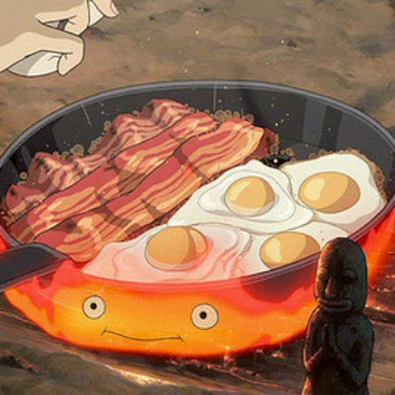

Howl's beacon & eggs breakfast

Sizzling breakfast served up courtesy of Calcifer's demonic flames
Howl's Moving Castle is one of the many exquisitely animated (and profoundly confusing) expressions of destiny, growth, and love brought to us by Hayao Miyazaki.
Can some at-home know-how help us bring the magic into our own kitchens?
Ingredients
- 8 Eggs
- 1/2 Cup cherry tomatoes
- Salt as required
- 150g Of bacon
- 1/4 Cup of parsley
- Black pepper as required
How to cook it?
- Fry bacon in a pan on medium-low flame until they are crispy. Transfer them into a plate.
- Use the same pan to cook eggs. Crack eggs in the pan and cook them as you like; sunny side up. Cover the pan so that the egg cooks properly. Slice cherry tomatoes and cook in the pan at the same time.
- Add seasoning and garnish with chopped fresh parsley.
- Serve bacon and eggs hot and enjoy!